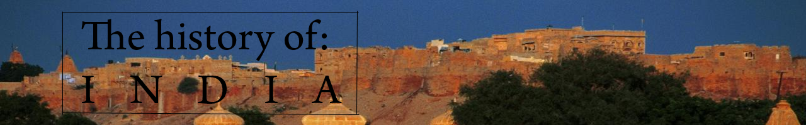

Note that this page will only have basic descriptions of each time period, please follow the links for further
details
Click here to jump to bottom of the page
Overview
India has always been a major part of history. It ranges from the first civilizations to the most beautiful architecture. 4
major religions, Hinduism, Buddhism, Jainism and Sikhism have all been birthed here. India's economy was the world's
largest until 1700 CE, and still continues to be a country at the forefront of the world stage. From 880 languages in 29
states, India has over time become extremely diverse. Now we will look at the history that made it so.
Indus Valley Civilization
3300-1700 BCE.
This is the beginning of Bronze Age civilization in the Indian sub-continent, as one of the three Cradles of
Civilization, the others being Mesopotamia and Ancient Egypt. It is named as such due to the fact that it was mainly
centered on the Indus river's delta and its surrounding areas, It came to an end in 1700 BCE, although some elements
survived. The civilization was larger than both Mesopotamia and Egypt combined, and had superior structure. The earliest Indus
Valley Civilzation claims extend all the way to the 6th millenium BCE.
Vedic Period
1750-600 BCE
The Vedic period constitutes the secondary bulk of Indian history before transitioning into the
Current/Common Era. Vedic culture’s paramount source of information are the Vedas, composed in Vedic Sanskrit and consisting
of the Rig, Atharva, Yajur and Sama Vedas. The Vedic society existed in Punjab and the Gangetic Plains.
Second urbanization
600-200 BCE
During this period, 2 religions were birthed, Jainism and Buddhism. A religious flowering occured, and
another set of Hindu religious texts was composed, the Upanishads. The term second urbanization is used as new kingdoms were
formed on the Gangetic plains.
Early classical to medieval period
200 BCE - 1200 CE
This period is mostly a conglomeration of the time between the Maurya (300 BCE) and Gupta empires. The Gupta empire was widely
known as the golden age of Hinduism. India's economy at this point comprised 25 to 33% of the world's
economy.

Late medieval period
1200 - 1526 CE
The late medieval period is characterized by Muslim conquests of India by Central Asian tribes. New military technology
resulted in the propagation of dynasties and empires to a greater degree. Sikhism, another religion, came to be during this
time.

Early modern period
1526-1858 CE
This the era in which the prominent Mughal dynasty took rule over India, and Islamic and Indian culture mixed to a great
degree. The growth of the Marathas and Mughals as major powers dominates this time.

Modern period and independence
After 1858 CE
This period begins with the rebellion of 1857 against the British Raj, and continues until the independence of India. It ends
with the British East India Company taking over rule of the Indian subcontinent.